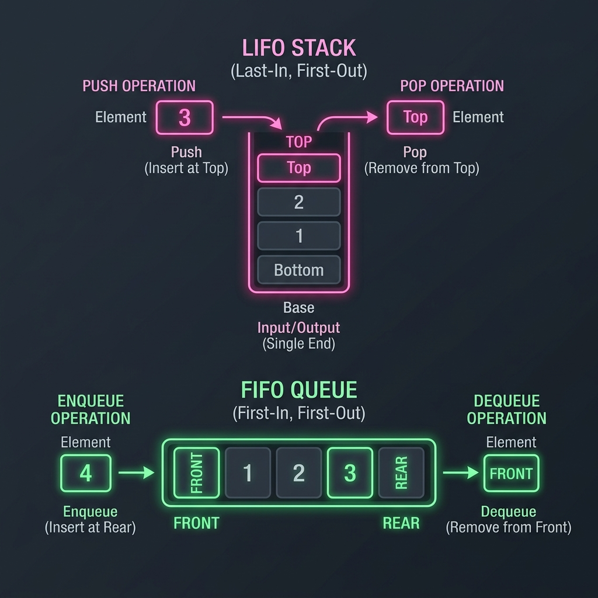

Introduction & Problem Explanation
The Implement Queue using Stacks problem challenges us to build a standard First-In, First-Out (FIFO) queue using only two Last-In, First-Out (LIFO) stacks.
A queue supports operations like:
push(x): Push element x to the back of queue.pop(): Removes the element from the front of the queue and returns it.peek(): Get the front element.empty(): Return whether the queue is empty.

Imagine you have a stack of cafeteria trays in a narrow dispenser. When you put trays in, they stack on top (Last-In). Customers want the bottom tray because it was placed there first (First-Out). To serve them, you grab another empty dispenser, move the trays one by one from the first dispenser to the second. This action completely reverses their order! Now, the oldest tray is at the top of the second dispenser. Customers can now take trays from the second dispenser. You only need to move trays over when the second dispenser becomes completely empty.
The Algorithmic Approach
Two-Stack Order Reversal (Amortized O(1) Time, O(n) Space)
We maintain two stacks:
inputStack: Dedicated to receiving new elements whenpush(x)is called.outputStack: Dedicated to serving elements forpop()andpeek().
- Push: Simply push the element onto
inputStack. This is a fastO(1)operation. - Pop/Peek: We want to get the oldest element, which resides at the top of
outputStack.- If
outputStackis not empty, we simply pop/peek from it. - If
outputStackis empty, we transfer all elements frominputStacktooutputStackby popping them one by one and pushing them ontooutputStack. This reverses their order, positioning the oldest element at the top. We then pop/peek fromoutputStack.
- If
- Empty: The queue is empty only when both
inputStackandoutputStackare empty.
O(n) time, each element is pushed and popped at most a constant number of times. Thus, the amortized time complexity per operation is O(1).
Step-by-Step Execution Walkthrough
Let's trace a sequence of operations:
- Step 1 (Initialization): Initialize two empty stacks:
inputStack = []andoutputStack = []. - Step 2 (Push 1): Push 1 onto
inputStack.inputStack = [1],outputStack = []
- Step 3 (Push 2): Push 2 onto
inputStack.inputStack = [1, 2],outputStack = []
- Step 4 (Peek):
outputStackis empty, so we transfer elements frominputStack.- Pop 2 from
inputStack, push tooutputStack. State:inputStack = [1],outputStack = [2]. - Pop 1 from
inputStack, push tooutputStack. State:inputStack = [],outputStack = [2, 1]. - Peek at the top of
outputStack: returns1.
- Step 5 (Pop):
outputStackis not empty, so we pop the top element fromoutputStack: returns1.- State:
inputStack = [],outputStack = [2].
- Step 6 (Push 3): Push 3 onto
inputStack.inputStack = [3],outputStack = [2]
- Step 7 (Pop):
outputStackis not empty, so we pop from it: returns2.- State:
inputStack = [3],outputStack = [].
Key Code Snippets & Explanations
Here is why the main logic in the solution is important:
inputStack.push(x): Keep the write path extremely simple and fast (O(1)).while (!inputStack.isEmpty()) outputStack.push(inputStack.pop()): The transfer logic that reverses the order of elements. By doing this lazily (only when the read stack is empty), we achieve O(1) amortized performance.inputStack.isEmpty() && outputStack.isEmpty(): Ensures we correctly track elements across both buffers before declaring the queue empty.
Java Implementation Code
Below is the complete, self-contained Java source code that solves this problem. It also includes a main method that traces the execution with console outputs.
package io.practise.dsa;
import java.util.Stack;
public class QueueUsingStacks {
public static class MyQueue {
private final Stack<Integer> inputStack = new Stack<>();
private final Stack<Integer> outputStack = new Stack<>();
/** Push element x to the back of queue. */
public void push(int x) {
inputStack.push(x);
}
/** Removes the element from in front of queue and returns that element. */
public int pop() {
shiftStacks();
return outputStack.pop();
}
/** Get the front element. */
public int peek() {
shiftStacks();
return outputStack.peek();
}
/** Returns whether the queue is empty. */
public boolean empty() {
return inputStack.isEmpty() && outputStack.isEmpty();
}
/** Helper method to transfer elements from input stack to output stack when empty. */
private void shiftStacks() {
if (outputStack.isEmpty()) {
while (!inputStack.isEmpty()) {
outputStack.push(inputStack.pop());
}
}
}
}
public static void main(String[] args) {
MyQueue queue = new MyQueue();
System.out.println("--- Implement Queue using Stacks Demonstration ---");
System.out.println("Pushing: 1");
queue.push(1);
System.out.println("Pushing: 2");
queue.push(2);
System.out.println("Peek (front of queue): " + queue.peek()); // Should be 1
System.out.println("Pop (removed front): " + queue.pop()); // Should be 1
System.out.println("Pushing: 3");
queue.push(3);
System.out.println("Pop (removed front): " + queue.pop()); // Should be 2
System.out.println("Is Queue empty? " + queue.empty()); // Should be false
}
}
Conclusion
Implementing a queue using stacks is a classic lesson in amortized analysis. By using a secondary stack to lazily reverse the element order, we preserve the FIFO contract while maintaining highly efficient runtime execution.